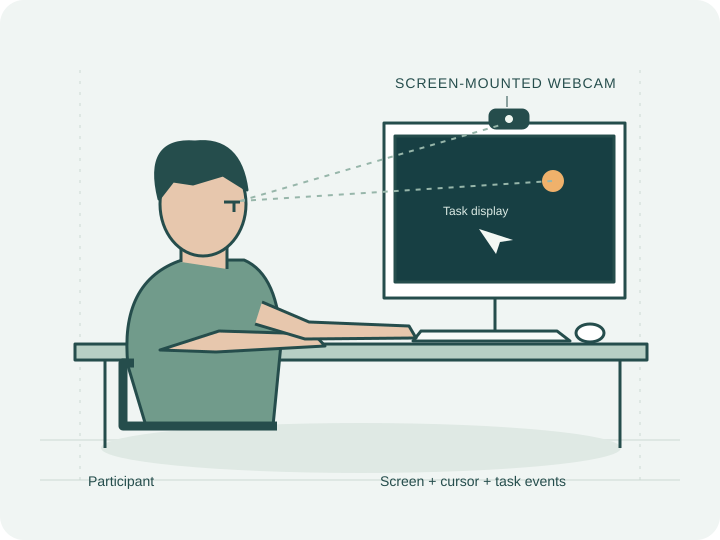

Interactive protocol illustration
PARTICIPANT ACTION
RECORDED REFERENCE
A desktop collection of visual behaviour
Calibration, interaction and viewing—connected through webcam, screen and task records.

01 / Dataset overview
150 participants.
Instructed references and everyday desktop actions.
Webcam frames support face, eye and iris measurements across calibration and tasks.
Face · eyes · iris02 / Protocol details
Equipment calibration estimates camera geometry. Participant calibration provides instructed references. Task targets, cursor positions and clicks remain distinct observations.
03 / Activity flow
Select an activity to try its illustration.
Thumbnails show actual example screens.
Activity illustrations explain the task. The example gallery shows selected recorded observations.
04 / Example gallery